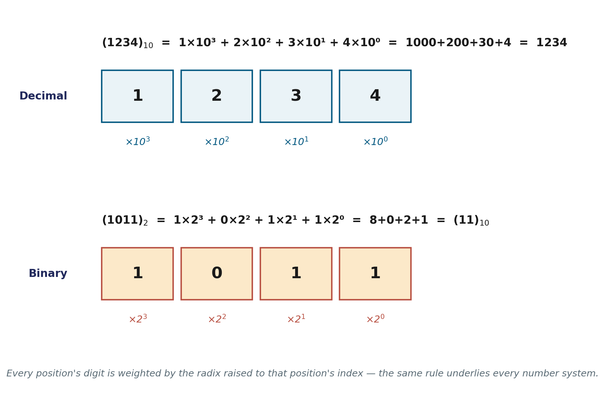
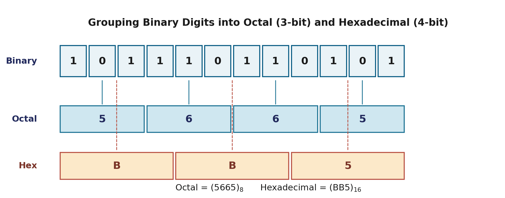

Every computer, from a microcontroller to a data-center GPU, ultimately does one thing: it moves 0s and 1s around. Before any of the interesting computer-organization topics — arithmetic, instruction cycles, memory hierarchy — make sense, you need a solid grip on how numbers, letters, and symbols get turned into those 0s and 1s in the first place. That's what this page covers: the data a computer works with, the number systems it uses to represent that data, and how to move fluently between those systems.
What Data Does a Computer Store?
Registers inside a digital computer hold one of two things: control information (bits that sequence the operations the hardware should perform) or data — the actual numbers and coded information being operated on. Data itself falls into three broad categories:
- Numbers used in arithmetic computations
- Letters of the alphabet used in text and data processing
- Other discrete symbols used for specific purposes (punctuation, control characters, and so on)
With one exception — numbers already expressed in pure binary — every one of these is represented inside the machine in binary-coded form: some agreed-upon mapping from a pattern of 0s and 1s back to the symbol it stands for.
Common Number Systems
A number system of radix (or base) r uses r distinct digit symbols, numbered 0 through r − 1, to represent quantities. The four systems that matter for this course are:
Decimal is what humans grew up with — probably because we have ten fingers. Binary is what hardware actually stores, because a transistor is most reliably built as a two-state (on/off) device. Octal and hexadecimal exist purely as convenient shorthand for binary, which you'll see in a moment.
Positional Notation
Every number system, regardless of radix, uses the same underlying rule: each digit's contribution to the total value is that digit multiplied by the radix raised to the power of its position.
value = Σ (digitᵢ × rⁱ) — where i is the position index, counting from 0 at the rightmost digit (negative for fractional digits after the point)

Positional notation: decimal 1234 and binary 1011 broken into place values
This single formula is why conversion between systems is always possible — it's the same rule, just with a different r substituted in.
Converting Between Number Systems
Any Radix → Decimal
Just expand the positional-notation formula and add up the terms. A few worked examples:
- (101101)₂ = 1×2⁵+0×2⁴+1×2³+1×2²+0×2¹+1×2⁰ = 32+8+4+1 = (45)₁₀
- (736.4)₈ = 7×8²+3×8¹+6×8⁰+4×8⁻¹ = 448+24+6+0.5 = (478.5)₁₀
- (F3)₁₆ = 15×16¹+3×16⁰ = 240+3 = (243)₁₀
Decimal → Any Radix
Split the number into its integer and fractional parts, and convert each separately:
- Integer part: divide repeatedly by r; read the remainders from last to first.
- Fractional part: multiply repeatedly by r; read the carried-over integer digits from first to last (the process may not terminate — stop once you have enough precision).
Worked example — convert (41.6875)₁₀ to binary:
Reading remainders bottom-to-top gives the integer part; reading carry digits top-to-bottom gives the fraction:
(41.6875)₁₀ = (101001.1011)₂
The exact same procedure works for any target radix — just divide/multiply by that radix instead of 2. Here's the same number, (41.6875)₁₀, converted to octal and hexadecimal:
Worked example — convert (41.6875)₁₀ to octal:
(41.6875)₁₀ = (51.54)₈
Worked example — convert (41.6875)₁₀ to hexadecimal:
(41.6875)₁₀ = (29.B)₁₆
Notice all three results — binary, octal, hex — represent the identical value. You can sanity-check any of them against each other using the bit-grouping shortcut in the next section: (101001.1011)₂ grouped in 3s gives (51.54)₈, and grouped in 4s gives (29.B)₁₆.
Fast Conversion via Bit Grouping
Because 8 = 2³ and 16 = 2⁴, there's a shortcut between binary and octal/hexadecimal that skips arithmetic entirely: group the bits. Each octal digit corresponds to exactly 3 binary digits; each hexadecimal digit corresponds to exactly 4.

Grouping binary digits into octal (3-bit) and hexadecimal (4-bit) groups
Pad with leading zeros to complete the outermost group, then just read each group off as its octal or hex digit — no division or multiplication needed. This is exactly why hexadecimal is the everyday shorthand for memory addresses, color codes, and raw binary dumps: it's four times shorter than binary but trivially easy to convert back.
Common Pitfalls
- Fractional conversions may not terminate. Converting 0.1 (decimal) to binary never ends cleanly — state the precision you're working to, rather than expecting an exact stop. (This is also, as it happens, the exact reason
0.1 + 0.2 != 0.3 in every programming language you'll ever use — more on that when we reach Floating-Point Representation.)
- Pad before grouping. Forgetting to pad a binary string to a full multiple of 3 (for octal) or 4 (for hex) bits shifts every digit in the result.
- The radix fixes the symbol set, not just the weights. A digit like 9 simply doesn't exist in octal — if you see it, the number isn't valid octal.
Applications of Number Systems
- Computing: memory addresses, machine instructions, and raw data are all binary underneath; hex is the practical shorthand engineers actually read.
- Color codes: web and design tools specify colors in hexadecimal —
#FF0000 is pure red, each pair of hex digits giving one of the red/green/blue channels a value from 0–255.
- Networking: IP addresses, MAC addresses, and checksums are commonly displayed in hex or binary for the same compactness reason.
- Cryptography: keys and hashes are usually generated and displayed in hexadecimal, since it maps cleanly onto the underlying binary data used by encryption algorithms.
Quick Quiz
Try these before checking the answers below.
- Convert (156)₁₀ to binary.
- Convert (11010110)₂ to hexadecimal using bit grouping.
- What is (2A)₁₆ in decimal?
- Why can octal represent every 3-bit binary group with a single digit, but not every 4-bit group?
- Is (189)₈ a valid octal number? Why or why not?
Check your answers
- 156 = 128+16+8+4 = (10011100)₂
- 1101 0110 → D6 in hex → (D6)₁₆
- (2A)₁₆ = 2×16+10 = (42)₁₀
- Octal's radix is 8 = 2³, exactly the range of a 3-bit group (0–7). A 4-bit group covers 0–15, which needs 16 symbols — one more digit than octal has, which is exactly why hexadecimal (radix 16) is the natural match for 4-bit groups instead.
- No — octal digits only go up to 7, and 8 and 9 aren't valid octal symbols.
Once you're comfortable converting between systems, the next step is learning how computers use these representations to handle negative numbers and turn subtraction into addition — covered next in [Complements](#).
Reference: M. Morris Mano, Digital Design, 3rd ed., Pearson/PHI.